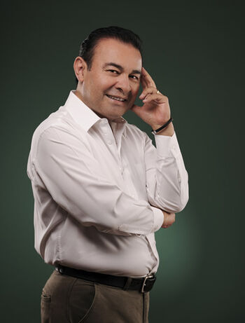
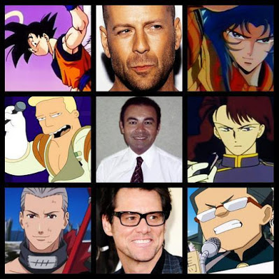
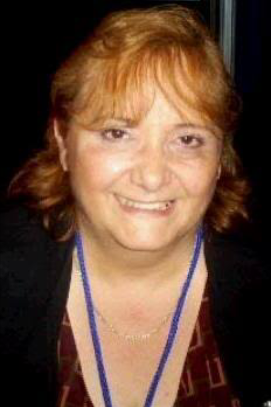
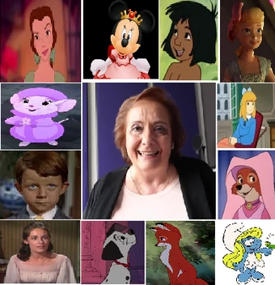
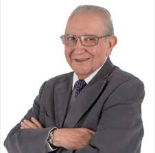
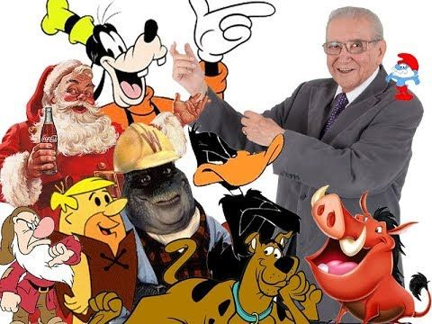

Algunos actores mas reconocidos
Mario Castañeda

Actor y director de doblaje Mario Castañeda

Algunos de sus trabajos mas reconocidos
Diana Santos

Actriz de doblaje Diana Santos

Algunos de sus trabajos mas conocidos
Francisco Colmenero

Actor de doblaje Francisco Colmenero

Algunos de sus trabajos mas conocidos